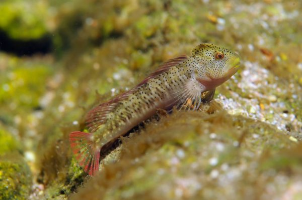

ÁGUILA IMPERIAL IBÉRICA
Es un águila de gran tamaño, de color pardo oscuro en todo el cuerpo excepto en los hombros y la parte alta de las alas, donde es de color pardo salpicado de plumas blancas. La nuca es ligeramente más pálida que otras partes del cuerpo, y la cola más oscura, sin bandas claras o líneas blancas como poseen otras águilas, como es el caso de su pariente imperial oriental. La cola es de punta cuadrada con cinco a siete bandas oscuras de las que la última es muy ancha. Poseen un ojo pardo dorado, cera y patas amarillas y un potente pico negro azulado.

BLENIO DE RÍO
Pez pequeño tamaño, cuyas aletas dorsal y anal son largas y recorren la mayor parte del cuerpo. La caudal tiene un perfil distal convexo. El cuerpo está desprovisto de escamas y la línea lateral es muy patente. Encima del ojo hay un pequeño tentáculo filiforme y la boca presenta dientes sobre las dos mandíbulas, con caninos muy desarrollados. En los machos hay una cresta cefálica muy desarrollada durante el periodo de celo. Coloración muy variable, con tendencia a presentar unas bandas trasversales oscuras. Las poblaciones de esta especie antes localmente abundantes pero se han reducido considerablemente en los últimos años. La población del río Guadiana es diferente genéticamente a las poblaciones mediterráneas

CABRA MONTÉS
La cabra montés o cabra hispánica es un bóvido de menor tamaño que un ciervo y de complexión fuerte y robusta, siendo la hembra más pequeña y delgada que el macho. Su pelaje, de color pardo grisáceo por el dorso y blanco por el vientre, varía a lo largo del año.